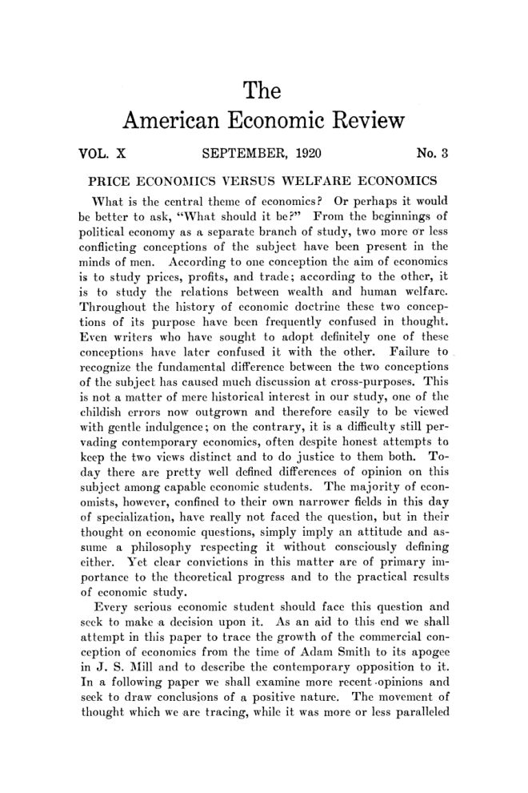

Fetter, 1920: a economia do preço contra a economia do bem-estar
Leitura: 9 min
Frank A. Fetter acompanha como a economia inglesa, de Smith a Mill, passou a medir riqueza e bem-estar pelo preço, e reúne as seis correntes que se levantaram contra essa concepção.


Em 1844, Nassau Senior opôs à lei das dez horas seu famoso argumento da última hora de trabalho. Entre 1847 e 1860, muitos que pensavam como ele mudaram de posição e passaram a aceitar a redução legal da jornada. Não foi por compaixão, escreve Frank A. Fetter, da Princeton University: a experiência mostrara que a jornada mais curta não reduzia a produção por trabalhador e, portanto, não reduzia os lucros. O episódio resume, para ele, o modo de raciocinar de uma escola que tomava o lucro do empregador como índice do bem-estar geral.
O artigo abre a American Economic Review de setembro de 1920 e é o primeiro de dois. Neste, Fetter traça o crescimento da concepção comercial da economia, de Adam Smith ao seu apogeu em John Stuart Mill, e descreve a oposição contemporânea a ela; no seguinte, promete examinar as opiniões mais recentes e tirar conclusões positivas.
Qual é o tema central da economia?
A pergunta de partida é essa, ou, como Fetter prefere, qual deveria ser. Desde o início da economia política, diz, convivem duas concepções mais ou menos em conflito. Para uma, o objetivo é estudar preços, lucros e comércio; para a outra, estudar as relações entre a riqueza e o bem-estar humano. As duas foram muitas vezes confundidas, até por autores que tentaram adotar só uma, e essa confusão teria provocado muita discussão de propósitos cruzados.
Fetter recusa tratar o assunto como curiosidade histórica. A dificuldade, a seu ver, ainda permeia a economia contemporânea. A maioria dos economistas, presos a campos estreitos numa época de especialização, não enfrentou a questão e simplesmente supõe uma atitude e uma filosofia a respeito, sem defini-las. Todo estudante sério, escreve, deveria encará-la e tomar uma decisão. O movimento que descreve teve paralelos em outros países, mas apareceu primeiro e de forma mais extrema na Inglaterra, e por isso ele se limita quase só a autores ingleses.
Adam Smith era um economista do preço?
Na leitura de Fetter, Smith foi eclético e continha os germes de todas as opiniões posteriores, mas, no espírito e na doutrina geral, foi quase sempre um economista do bem-estar. A Riqueza das Nações quer mostrar a futilidade da intervenção do Estado tal como se desenvolvera na Europa, e o mercantilismo, que disfarçava favores a interesses comerciais como política de acumular metais preciosos, era o alvo. Mostrar que o preço em moeda não é índice verdadeiro da riqueza ou do bem-estar nacional estava, portanto, no centro da tarefa de Smith, que distinguia o preço real e o preço nominal das mercadorias e do trabalho.
Fetter lembra que a passagem da mão invisível tem sido citada demais como prova de uma harmonia entre todo interesse comercial e o bem público; o contexto mostraria que Smith queria desacreditar os que pediam tarifas e subsídios em nome do interesse geral. Ainda assim, a praticidade de Smith levou ao mercado e dirigiu a atenção ao valor de troca, e não à psicologia da escolha. Sua confusão entre o valor de uso e a utilidade como importância real para o bem-estar teria deixado o campo mais livre para a leitura comercial dos sucessores. Malthus, preocupado com a população e as condições materiais de vida, é classificado como economista do bem-estar.
Por que Ricardo marca a virada?
A obra principal de Ricardo saiu em 1817, e não é por acaso, diz Fetter, que observadores datam do ano seguinte o grande aumento do interesse público pela economia. Ricardo seria, entre os economistas da sucessão ortodoxa, o mais habituado às ideias do mundo dos negócios e à expressão monetária das valorações econômicas. Seu melhor trabalho foi em teoria monetária, e ele teria sido o primeiro economista reconhecido a usar uma definição exclusivamente monetária de preço. Na distribuição, combinava uma teoria de salários de subsistência com a do fundo de salários; entre proprietários de terra e capitalistas, ficava com os capitalistas.
“Hostil à classe dos proprietários de terra, era apenas indiferente às necessidades dos trabalhadores.” (“Hostile to the landlord class, he was merely indifferent to the needs of the workers.”)
Os três traços, observa Fetter, podem ser lidos como fases do primeiro, tal como interpretado por uma classe comercial bem-sucedida numa sociedade industrial em rápido desenvolvimento. O empregador, e não o consumidor final, era visto como a fonte do emprego; a produção interessava como processo de gerar lucros; e o consumo das massas, como objetivo da indústria, quase não recebia atenção.
De onde veio a oposição?
Fetter identifica seis fontes. A primeira foram os reformadores das leis fabris, uma combinação de proprietários de terra conservadores e de humanitários, que aprovaram uma série de leis no auge do ricardianismo. Ricardo ajudara em 1824 a revogar as leis contra as associações de trabalhadores, mas se opôs às leis fabris; nenhum economista reconhecido parece ter tomado partido delas. A segunda foi o protesto ético de Thomas Carlyle, em Chartism, de 1839, Past and Present, de 1843, e Latter Day Pamphlets, de 1850, que recusava o preço como medida do bem-estar e propunha a liderança dos fortes, uma espécie de socialismo de Estado aristocrático. John Ruskin, discípulo de Carlyle, insistiu na primazia dos valores morais e estéticos sobre os pecuniários.
“O pagamento em dinheiro como único vínculo.” (“Cash payment the sole nexus”)
A terceira fonte foram os socialistas cristãos ingleses, reunidos em abril de 1848 em torno de Charles Kingsley e de Frederick Denison Maurice, que adotaram o nome em 1850, ajudaram a formar a Cooperative Wholesale Society em 1864 e influíram no movimento dos settlements universitários. A quarta veio dos trabalhadores e de seus sindicatos: a doutrina do fundo de salários, somada às teorias da acumulação e da população, negava aos sindicatos o poder de elevar salários em geral. Fetter atribui a essa atitude parte da hostilidade dos trabalhadores mais organizados a tudo o que se chamava economia política.
A quinta foi a dos socialistas. Na primeira metade do século XIX, saíram na Inglaterra centenas de livros e folhetos socialistas e mais de cem periódicos. O Capital, de Marx, só apareceu em 1867; segundo os estudos que Fetter cita, as ideias essenciais de Marx já tinham sido expostas, um terço de século antes, por autores como William Thompson. Os exageros e o viés de classe da economia comercial, diz, tornaram a teoria marxista psicologicamente inevitável, e os pressupostos de Ricardo continham as sementes lógicas da teoria marxista do valor. A sexta fonte foi interna: dissidentes como Malthus, Torrens, Richard Jones, Sismondi, Bailey e Longfield, que não tiveram efeito cumulativo.
Por que Mill não fechou o sistema?
O tratado de John Stuart Mill, de 1848, deu ao conjunto, nas palavras de Edwin Cannan que Fetter cita, qualidades populares e aparência de completude. Mas continha elementos em conflito: a tentativa de reformular a teoria do valor e a de humanizar a economia ricardiana com projetos de reforma, como a cooperação e a reforma agrária. A economia de Mill era a que ele aprendera ainda jovem com o pai, e incorporava a teoria do valor-trabalho, o fundo de salários e um conceito confuso de capital. Críticos moderados como Roscher, Ingram e Cannan o consideram incoerente; o próprio Mill retratou depois partes essenciais do esquema.
Nos anos 1860 e 1870 começou, entre os próprios economistas de classe média da Inglaterra e dos Estados Unidos, a mudança de método, de simpatias e de teoria. Fetter cita a tentativa de J. E. Cairnes de reparar a teoria do valor de Mill, os revisionistas do valor subjetivo, Jevons, Clark e os austríacos, e os historiadores e reformadores, como Rogers, Cunningham, Ashley, Ingram, Toynbee e Hobson. Uma nova geração, com outra formação e outros ideais profissionais, substituiu a antiga. A nota sobre as profissões dos clássicos fecha o argumento.
Cada um daqueles homens, diz Fetter, tornou-se economista autodidata, sem estudos especiais nem instrução sistemática. Hoje, acrescenta, o economista pertence a uma corporação de estudiosos profissionais treinados no assunto e no espírito do trabalho científico. A conclusão do artigo é que a economia do preço do século XIX foi contestada nas premissas e não só nas conclusões; e que, diante de quem propõe de novo o preço como centro do interesse econômico, cabe perguntar, no segundo artigo, se ele pode ser o ideal e o centro do estudo.
Na minha leitura
Na minha leitura, o artigo vale mais pela pergunta que pela classificação dos autores. Fetter separa duas coisas que a teoria econômica costuma juntar: o preço como mecanismo de coordenação, que explica o que se troca e a que termos, e o preço como medida de resultado social. O primeiro uso não implica o segundo, e boa parte das divergências que ele narra, das leis fabris ao fundo de salários, nasce de passar de um ao outro sem aviso.
O episódio das leis fabris ilustra o ponto de método. A jornada mais curta foi aceita quando se viu que não reduzia a produção por trabalhador. A evidência empírica mudou a política, mas o critério de julgamento continuou sendo o lucro. A pergunta de Fetter é se esse critério basta, e ela não se resolve com mais dados sobre preços.
Glossário
- Economia do preço
- na acepção de Fetter, a que toma preços, lucros e comércio como objeto e o preço em moeda como medida da riqueza.
- Economia do bem-estar
- a que estuda as relações entre a riqueza e o bem-estar humano.
- Valor de troca
- quantidade de outros bens ou de moeda que uma mercadoria obtém no mercado.
- Fundo de salários
- doutrina clássica segundo a qual os salários são pagos de um estoque prévio de capital dos empregadores.
- Salário de subsistência
- teoria segundo a qual, no longo prazo, os salários tendem ao necessário para o trabalhador viver.
- Leis fabris (Factory Acts)
- leis britânicas do século XIX que limitaram a jornada e regularam o trabalho nas fábricas.
- Socialistas ricardianos
- nome dado a críticos socialistas de Ricardo que partiam de suas próprias premissas sobre valor e distribuição.
Fontes
- Price Economics Versus Welfare Economics — Frank A. Fetter (Princeton University) (pp. 467–487). JSTOR · Internet Archive (PDF)
- Edição completa, com os demais artigos: Nº 165 do Arquivo.
Documento em domínio público (EUA, publicado antes de 1931), via JSTOR Early Journal Content e Internet Archive. Resumo e comentário do autor deste site, sem afiliação com a American Economic Association. Encontrou um erro? Escreva: a correção é publicada no próprio texto, com data.
↑ Nº 165 · Preço ou bem-estar, o imposto britânico e a lei das ferrovias de 1920 Rich, 1920: a lei que devolveu as ferrovias aos donos →